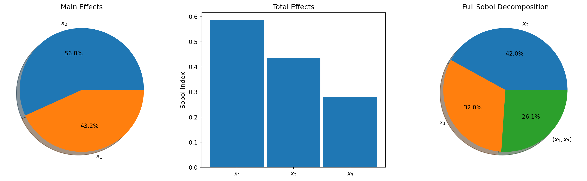
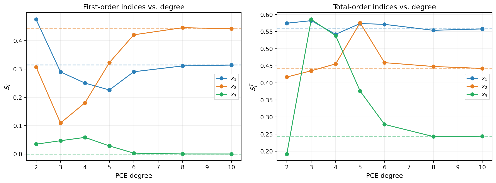

import numpy as np
import matplotlib.pyplot as plt
from pyapprox.util.backends.numpy import NumpyBkd
from pyapprox.benchmarks import ishigami_3d
from pyapprox.surrogates.affine.expansions.pce import (
create_pce_from_marginals,
)
from pyapprox.surrogates.affine.expansions.fitters.least_squares import (
LeastSquaresFitter,
)
bkd = NumpyBkd()
np.random.seed(42)
# Load benchmark
benchmark = ishigami_3d(bkd)
func = benchmark.function()
prior = benchmark.prior()
gt = benchmark.ground_truth()
marginals = prior.marginals()
nvars = 3
gt_main = bkd.to_numpy(gt.main_effects).flatten()
gt_total = bkd.to_numpy(gt.total_effects).flatten()PCE-Based Sensitivity Analysis
PyApprox Tutorial Library
Computing Sobol indices analytically from polynomial chaos expansion coefficients.
TipDownload Notebook
Learning Objectives
After completing this tutorial, you will be able to:
- Use
PolynomialChaosSensitivityAnalysisto compute all Sobol indices from a fitted PCE - Specify interaction terms of interest and interpret higher-order indices
- Visualize sensitivity results with built-in plotting functions
- Assess the accuracy of PCE-based indices by comparing against ground truth
Prerequisites
Complete:
- Sensitivity Analysis — variance decomposition and Sobol index definitions
- Building a Polynomial Chaos Surrogate — PCE fitting basics
Quick Recap
The orthonormality of the PCE basis lets us compute Sobol indices directly from the expansion coefficients \(c_k\). The first-order index \(\Sobol{i}\) is the ratio of variance from terms involving only \(\theta_i\) to the total variance. No additional sampling is needed once the PCE is fitted.
Setup
We use the Ishigami benchmark, a standard 3-variable test function with known analytical Sobol indices:
\[ f(x_1, x_2, x_3) = \sin(x_1) + 7\sin^2(x_2) + 0.1\, x_3^4 \sin(x_1) \]
The Ishigami function has notable features: \(x_2\) has the largest main effect, \(x_3\) has zero main effect but a strong interaction with \(x_1\), and \(x_1\) participates in both direct and interaction effects.
# Fit a PCE to the Ishigami function
N_train = 200
samples_train = prior.rvs(N_train)
values_train = func(samples_train)
degree = 8
pce = create_pce_from_marginals(marginals, degree, bkd, nqoi=1)
ls_fitter = LeastSquaresFitter(bkd)
pce = ls_fitter.fit(pce, samples_train, values_train).surrogate()Basic Usage
The PolynomialChaosSensitivityAnalysis class wraps a fitted PCE and provides Sobol index computation.
from pyapprox.sensitivity import PolynomialChaosSensitivityAnalysis
sa = PolynomialChaosSensitivityAnalysis(pce)
# Main effects (first-order indices)
main_effects = sa.main_effects() # shape (nvars, nqoi)
# Total effects
total_effects = sa.total_effects() # shape (nvars, nqoi)The PCE-based estimates closely match the analytical ground truth. Note that \(\Sobol{3} \approx 0\) (no main effect for \(x_3\)) but \(\SobolT{3} > 0\) (due to the \(x_1 x_3\) interaction).
Interaction Terms
To compute higher-order Sobol indices (e.g., \(\Sobol{13}\)), specify the interaction terms of interest. Each column of the interaction matrix is a binary indicator of which variables are active.
# Define interaction terms: main effects + all pairwise + triple
interaction_terms = bkd.asarray([
[1, 0, 0, 1, 1, 0, 1], # x_1 active
[0, 1, 0, 1, 0, 1, 1], # x_2 active
[0, 0, 1, 0, 1, 1, 1], # x_3 active
])
sa.set_interaction_terms_of_interest(interaction_terms)
sobol_all = sa.sobol_indices() # shape (nterms, nqoi)The \(\Sobol{13}\) interaction is substantial, capturing the \(x_1\)-\(x_3\) coupling in the \(0.1 x_3^4 \sin(x_1)\) term. The other pairwise and triple interactions are near zero.
Visualization
The sensitivity.plots module provides built-in plotting functions.
from pyapprox.sensitivity.plots import (
plot_main_effects,
plot_total_effects,
plot_interaction_values,
)
fig, (ax1, ax2, ax3) = plt.subplots(1, 3, figsize=(15, 4.5))
# Main effects pie chart
plot_main_effects(main_effects, ax1, bkd, rv="x")
ax1.set_title("Main Effects", fontsize=12)
# Total effects bar chart
plot_total_effects(total_effects, ax2, bkd, rv="x")
ax2.set_ylabel("Sobol Index", fontsize=11)
ax2.set_title("Total Effects", fontsize=12)
# Full Sobol decomposition pie chart
plot_interaction_values(sobol_all, interaction_terms, ax3, bkd, rv="x")
ax3.set_title("Full Sobol Decomposition", fontsize=12)
plt.tight_layout()
plt.show()
Convergence with PCE Degree
The accuracy of PCE-based Sobol indices depends on how well the surrogate approximates the true function. Higher polynomial degree generally gives better indices, but requires more training data.

The \(x_3\) total effect converges slowly because it requires capturing the \(x_3^4\) term, which needs at least polynomial degree 4.
Key Takeaways
PolynomialChaosSensitivityAnalysiscomputes Sobol indices analytically from PCE coefficients — no sampling neededmain_effects()andtotal_effects()return first-order and total-order indices- Use
set_interaction_terms_of_interest()andsobol_indices()for higher-order interaction indices - The sum of all Sobol indices equals 1 (up to surrogate error)
- Index accuracy depends on the PCE degree — higher degree resolves more complex functions
Exercises
(Easy) Compute and compare the sum \(\sum_i \Sobol{i}\) at degree 4 vs. degree 8. How does the sum change, and what does it imply about how well the PCE captures interactions?
(Medium) Apply PCE sensitivity analysis to the 4D Sobol G-function (
sobol_g_4dbenchmark). Compute main effects and compare to the analytical ground truth. What polynomial degree is sufficient?(Challenge) Use a multi-output PCE (e.g., the beam model with 3 QoIs) and compute Sobol indices for each QoI. Create a grouped bar chart comparing the rankings across QoIs.
Next Steps
Continue with:
- Morris Screening — Cheap screening to identify important inputs before Sobol analysis
- Bin-Based Sensitivity — Sobol indices from existing datasets (no special sampling design)